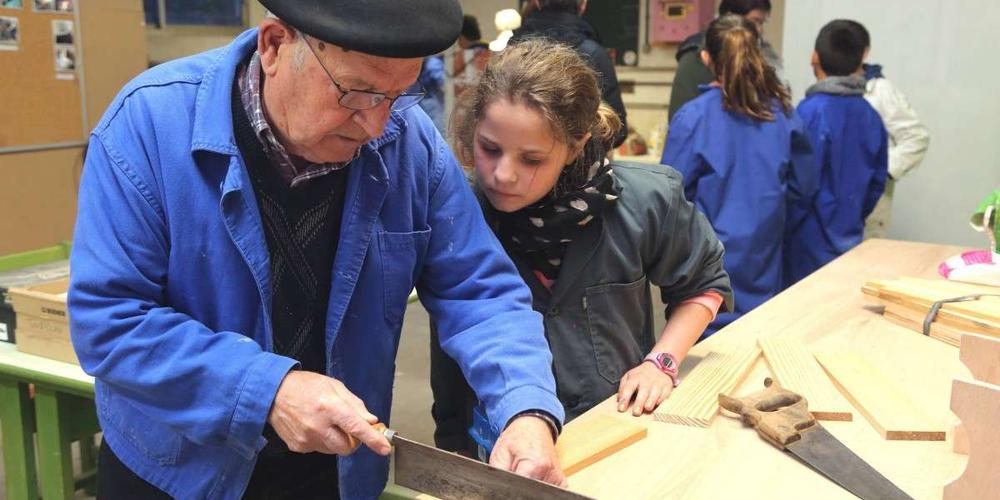
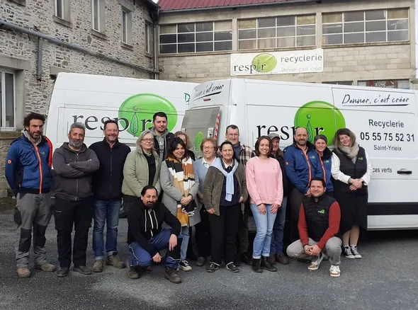

Les Membres de l’Association
L’association L’Outil en Main repose sur une belle diversité de membres, tous unis par la passion de la transmission, du savoir-faire artisanal et de l’engagement local. Voici les principaux groupes qui composent cette grande famille :
-
Artisans retraités : véritables piliers de l’association, ils mettent bénévolement leur savoir-faire au service des jeunes. Menuisiers, boulangers, forgerons, électriciens… ils partagent avec patience et passion les gestes du métier.
 -
Professionnels bénévoles : actifs ou récemment retraités, ils viennent renforcer les équipes en apportant leurs compétences techniques et humaines. Leur présence permet de diversifier les domaines proposés.
-
Enfants de 9 à 14 ans : au cœur du projet, ces jeunes découvrent chaque semaine des métiers manuels à travers la pratique. Ils apprennent la concentration, la minutie et la fierté du travail bien fait.
-
Encadrants locaux : ce sont les bénévoles qui assurent la coordination des activités : accueil des enfants, organisation logistique, gestion du matériel, communication… Leur rôle est essentiel.

Grâce à cette synergie intergénérationnelle, L’Outil en Main transmet non seulement des compétences, mais aussi des valeurs humaines fortes : le respect, la solidarité, la curiosité et l’épanouissement personnel.